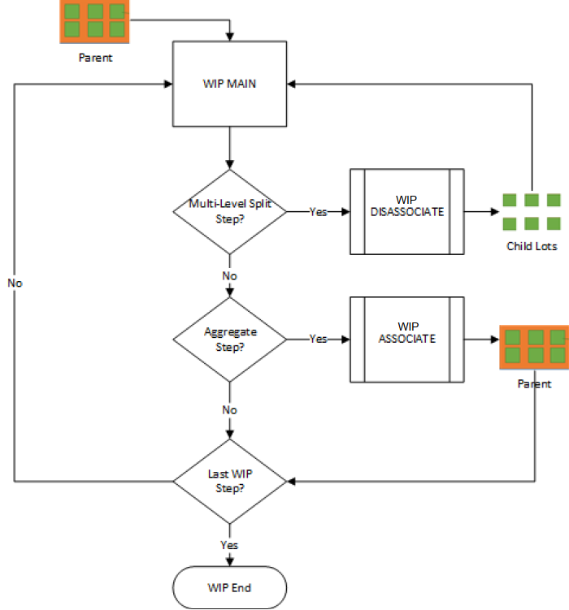

Lots created with Multi Level Start are quantity (Qty) based. Qty 2 always contains zero. These lots cannot be processed by item-based steps.
You track the parent lot through WIP Main until you reach the step configured with “Is Multi Level Split” selected. This step requires that the child lots be disassociated (split) from the parent lot. The split occurs automatically if the step is configured with “Auto Multi Level Split” also selected. Otherwise, you must manually split the parent from its children using the Disassociate page.
The disassociated parent is automatically move to the step configured as the "Multi Level Aggregate Workflow Step." The parent cannot be moved or tracked until all of its child lots have been re-associated.
This image shows an example of multi-level processing.
